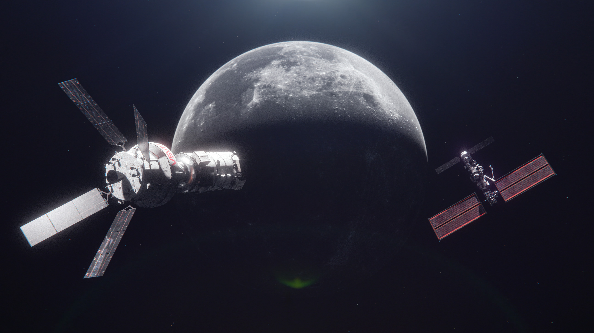

About This Course

El Space Exploration Course es un programa académico diseñado para comprender en profundidad los fundamentos de la exploración espacial humana en la nueva era tecnológica. Este curso analiza el equilibrio entre la ambición de expandir la presencia humana en el cosmos y la rigurosa disciplina ingenieril que lo hace posible. A lo largo del programa, el alumnado explora tanto el “por qué” como el “cómo” de las misiones espaciales tripuladas, integrando ciencia, tecnología, seguridad y visión estratégica.
Enfoque y Metodología
La metodología combina formación teórica avanzada con análisis técnico de casos reales basados en los estándares de la NASA. Se aplica el enfoque “Test Like You Fly” (Probar como vuelas), aprendizaje basado en retos y estudio de protocolos reales de ingeniería aeroespacial. El curso incorpora:
- Análisis de misiones tripuladas y arquitectura de naves espaciales.
- Simulaciones conceptuales de diseño con tolerancia a fallos (1FT y 2FT).
- Estudio de sistemas FDIR (Detección, Aislamiento y Recuperación de Fallos).
- Evaluación de riesgos catastróficos: ruptura, fugas, fuego y pérdida de control. La evaluación es continua y se basa en proyectos técnicos, informes de análisis y pruebas aplicadas.
Contenidos Académicos
El programa se estructura en módulos fundamentales:
1. Fundamentos y beneficios de la exploración espacial humana
- Impacto científico en microgravedad.
- Avances en ciencias de la vida y ciencias físicas.
- Innovación tecnológica y “spin-offs” industriales.
- Cooperación internacional y sostenibilidad ambiental.
2. Ingeniería de misiones tripuladas
- Filosofías de diseño: Tolerancia a Fallos y DFMR (Design for Minimum Risk).
- Separación de funciones redundantes.
- Modelos matemáticos críticos y simulaciones.
3. Sistemas de Propulsión y Fluidos
- Monopropelentes, bipropelentes y criogénicos.
- Tanques presurizados y COPVs.
- Control de contaminación y filtración.
4. Aviónica y Control de Fallos
- Instrumentación redundante y redundancia disimilar.
- Arquitectura de software de seguridad.
5. Protocolos y Estándares de Seguridad
- Pruebas de calificación y aceptación.
- Verificación de fugas y pruebas en vacío.
- Control de peligros catastróficos según estándares NASA.
Profesorado
El profesorado está compuesto por especialistas en ingeniería aeroespacial, sistemas de propulsión, análisis de riesgos y seguridad espacial, con experiencia en investigación y proyectos tecnológicos internacionales.
Duración y Modalidad
- Duración estimada: 4 a 6 meses.
- Modalidad: Online con acceso a materiales técnicos descargables.
- Certificación final tras evaluación satisfactoria.
Salidas Profesionales
El curso prepara para desarrollarse en:
- Industria aeroespacial.
- Centros de investigación científica.
- Departamentos de ingeniería de sistemas críticos.
- Consultoría en análisis de riesgos tecnológicos.
Ayudas y Métodos de Pago
Se ofrecen becas parciales por mérito académico y apoyo económico limitado. El pago puede realizarse en modalidad única o fraccionada en cuotas mensuales. El Space Exploration Course no solo transmite conocimientos técnicos, sino que forma profesionales capaces de comprender que el futuro de la humanidad en el espacio depende del equilibrio entre innovación audaz y ejecución rigurosa.